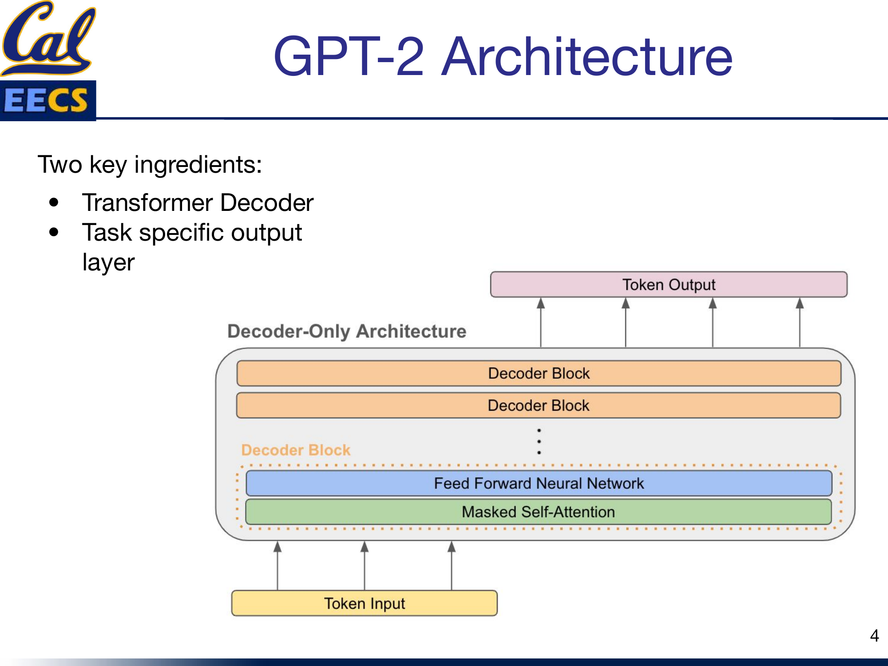
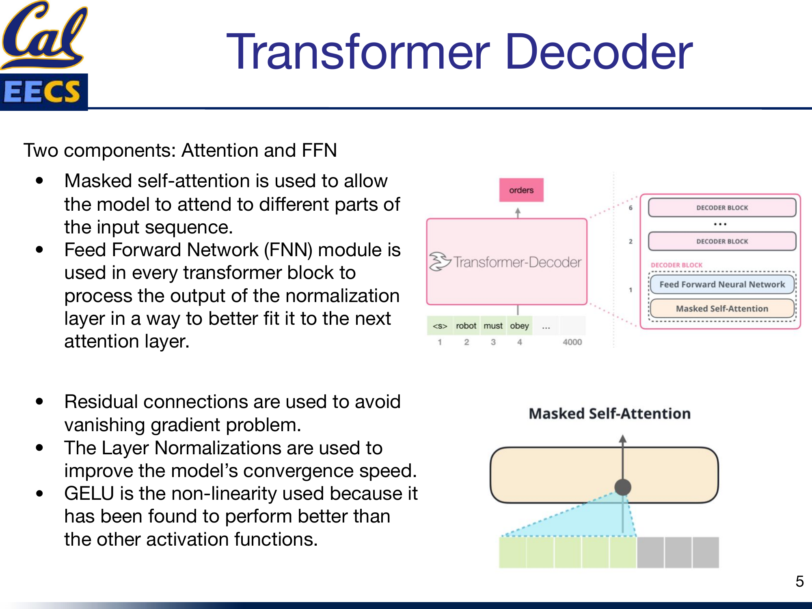
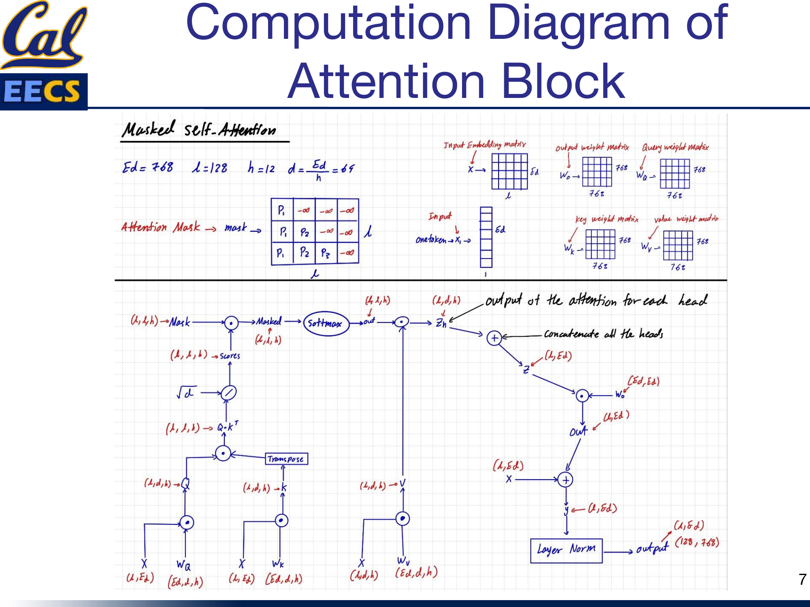
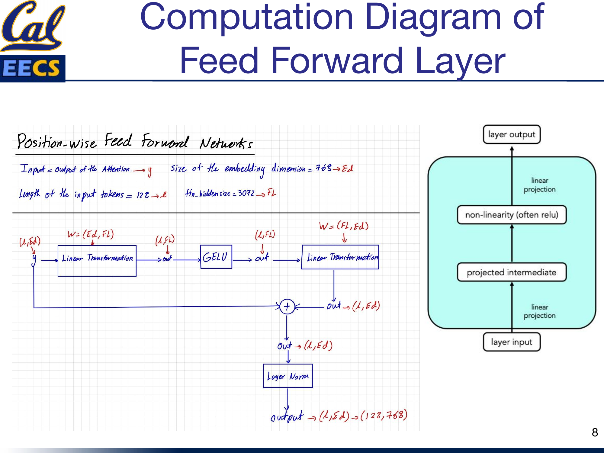
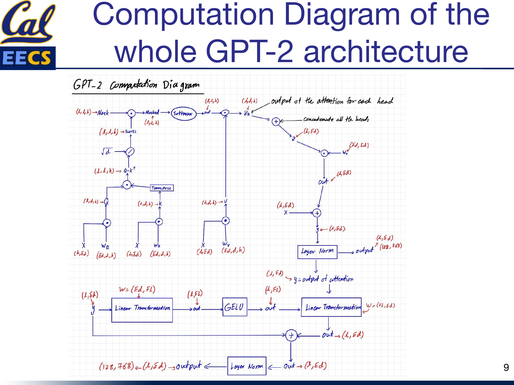

Details of the GPT-2 Model (Generative Pre-trained Transformer)
By Hiva Mohammadzadeh | Stanford MSCS · UC Berkeley EECS
What Makes GPT-2 Different
GPT-2 is a pre-trained deep learning model that uses unidirectional transformers to generate one token at a time. That word "unidirectional" is the single most important distinction between GPT-2 and models like BERT.
BERT is a bidirectional encoder. It sees the entire input sequence at once and builds representations by attending to tokens on both sides of every position. That makes it powerful for understanding tasks -- classification, entity recognition, question answering -- but it cannot generate text. It has no notion of "past" and "future" in a sequence.
GPT-2 is the opposite. It is a decoder-only model that generates output in an autoregressive fashion. It learns to predict the next word in a sequence given the previous words. At each step, the model can only look backward. It never peeks at tokens that come later. This constraint is enforced by a causal mask in the attention mechanism, and it is the architectural decision that makes GPT-2 a generative model.
The core architecture consists of 12 Transformer Decoder blocks, where each block has two sub-layers: a Multi-Head Masked Self-Attention mechanism and a position-wise fully connected Feed-Forward Network. For GPT-2 Small (the variant I focus on here), the configuration is 128 tokens with an embedding dimension of 768 and a feed-forward filter size of 3072.
Training: Next Token Prediction
GPT-2's training happens in two stages.
Pre-Training. The model is pre-trained on a large, diverse text corpus using an unsupervised learning approach. The objective is straightforward: given a sequence of tokens, predict the next one. The model sees tokens 1 through t and learns to predict token t+1. This is done across billions of tokens, and it gives the model a broad understanding of language structure, grammar, facts, and even some reasoning ability.
Fine-Tuning. After pre-training, the model is fine-tuned on specific downstream tasks by adding a task-specific output layer. The pre-trained weights provide a strong initialization, and the fine-tuning stage adapts the model to the particular distribution and format of the target task.
This two-stage approach is what "pre-trained" means in the name. The model arrives at your fine-tuning task already knowing a lot about language. You are not training from scratch -- you are specializing.
The Architecture
The GPT-2 architecture has two key ingredients: the Transformer Decoder stack and a task-specific output layer on top.

Decoder-Only Architecture with stacked Decoder Blocks, each containing Feed Forward Neural Network and Masked Self-Attention, Token Input at bottom, Token Output at top
Each decoder block contains two sub-layers in sequence. First, a masked multi-head self-attention layer. Second, a position-wise feed-forward network. Both sub-layers use residual connections and layer normalization.
The input tokens are embedded into 768-dimensional vectors, and those embeddings flow upward through all 12 decoder blocks. The output at the top is a distribution over the vocabulary for the next token prediction.
The Masked Attention Mechanism
| P1 | -∞ | -∞ | -∞ |
| P1 | P2 | -∞ | -∞ |
| P1 | P2 | P3 | -∞ |
| P1 | P2 | P3 | P4 |
| ✓ | ✓ | ✓ | ✓ |
| ✓ | ✓ | ✓ | ✓ |
| ✓ | ✓ | ✓ | ✓ |
| ✓ | ✓ | ✓ | ✓ |
GPT-2's causal mask (left) vs BERT's full attention (right). The mask is the key architectural difference.
This is the heart of GPT-2, and where the fundamental difference from BERT lives.
The attention mechanism has two components: the attention computation itself and the feed-forward network that follows it. I will break down the attention computation in detail.
Masked self-attention allows the model to attend to different parts of the input sequence, but with a critical constraint: each position can only attend to positions at or before it. This is enforced by a lower-triangular mask that sets all "future" attention scores to negative infinity before the softmax. After softmax, those entries become zero -- the model literally cannot see the future.

robot must obey ..." loading="lazy">Transformer decoder stack and masked self-attention visualization with tokens <s> robot must obey ...
A few design choices in the decoder block matter:
- Residual connections are used to avoid the vanishing gradient problem. The input to each sub-layer is added back to the output, so gradients always have a direct path backward through the network.
- Layer Normalization improves the model's convergence speed by normalizing activations within each layer.
- GELU is the nonlinearity used in the feed-forward network. It has been found to perform better than other activation functions in transformer architectures -- smoother gradients translate to smoother training (I covered this in detail in my activation functions post).
Dimensions of the Weight Matrices
The concrete dimensions matter when you are implementing this or counting compute. For GPT-2 Small:
- Input embedding: (batch_size, 128, 768), which can be reshaped as (batch_size, 128, 64, 12) for parallel processing across the 12 attention heads.
- Projection weight matrices (Wq, Wk, Wv, Wo): Each is (768, 768). These project the input into the query, key, value, and output spaces.
- Per-head Q, K, V matrices: Query is (batch_size, 1 token, 768) or equivalently (batch_size, 128, 64, 12). Key and Value are (batch_size, sequence_length, 768) or (batch_size, 128, 64, 12).
- Feed-forward weights: The first dense layer is (768, 3072) and the second dense layer is (3072, 768).
The Computation Flow
Here is the full computation for the attention block, step by step.

Masked Self-Attention showing Ed=768, L=128, h=12, d=Ed/h=64, attention mask (lower triangular with -inf), input embedding matrix, weight matrices, and full flow from X through Q,K,V to output
The input X has shape (L, Ed) = (128, 768). It is projected through three weight matrices to produce Q, K, and V. Then:
- Compute Q * K^T to get raw attention scores.
- Apply the causal mask -- set upper-triangular entries to negative infinity.
- Apply softmax to get normalized attention weights (shape: L x L per head).
- Multiply the attention weights by V to get per-head outputs z_h.
- Concatenate all 12 heads to get z with shape (L, Ed).
- Project through Wo (shape Ed x Ed) to get the attention output (L, Ed).
- Add the residual connection (the original input X).
- Apply Layer Normalization.
The output is (128, 768) -- same shape as the input, ready for the feed-forward layer.
The Feed-Forward Network
The FFN in GPT-2 follows the same structure as BERT's feed-forward layer. It is a simple two-layer network with a GELU activation in between.

Feed Forward Layer showing input y with Ed=768, L=128, Fl=3072, linear projections, GELU, residual connection, and layer norm
The computation is:
- Take the input y (the output of the attention sub-layer), shape (128, 768).
- Apply a linear projection: (Ed, Fl) = (768, 3072). This expands the representation to 4x the embedding dimension.
- Apply GELU activation.
- Apply a second linear projection: (Fl, Ed) = (3072, 768). This compresses back to the embedding dimension.
- Add the residual connection (the input y).
- Apply Layer Normalization.
The output is again (128, 768). The expansion to 3072 and back to 768 gives the network a wider internal representation to work with before compressing it back down. This bottleneck structure is standard across virtually all transformer architectures.
Full Architecture Walkthrough
Putting it all together, the complete GPT-2 block chains the attention sub-layer and the FFN sub-layer in sequence, each with its own residual connection and layer normalization.

Complete diagram combining masked attention + FFN: full flow from input through attention (with mask), residual, layer norm, FFN, residual, layer norm to output
The flow for one decoder block:
Input (128, 768) --> Masked Multi-Head Self-Attention --> + Residual --> Layer Norm --> FFN --> + Residual --> Layer Norm --> Output (128, 768)
This block is repeated 12 times. The output of block 1 feeds into block 2, and so on. After all 12 blocks, the final representation is projected to the vocabulary size for next-token prediction.
Counting FLOPs
Understanding compute cost matters when you are choosing model sizes, planning training runs, or comparing architectures. Here is the FLOP breakdown for one forward pass through GPT-2 Small.
Attention Block FLOPs
Weight matrix projections (Q, K, V):
3 x 128 x 768 x 768 x 2 = 452,984,832 FLOPs
These are the three matrix multiplications that project the input into query, key, and value spaces. The factor of 2 accounts for the multiply-accumulate operations.
Masked Multi-Head Self-Attention (for 12 heads):
- Q * K^T: 2 x 12 x 128 x 64 x 128 = 25,165,824 FLOPs
- Scores * V: 2 x 12 x 128 x 128 x 64 = 25,165,824 FLOPs
- Wo projection: 2 x 128 x 768 x 768 = 150,994,944 FLOPs
Total MHA: 201,326,592 FLOPs
Note: the causal mask zeroes out future positions but does not reduce the FLOP count in practice -- the full matrix multiplications are computed and then masked.
Feed-Forward Network FLOPs
128 x 768 x 3072 x 2 x 2 + 128 = 1,207,959,552 FLOPs
The two factors of 2 account for the two linear layers (up-projection and down-projection) and the multiply-accumulate operations. The FFN dominates the compute -- it accounts for roughly 65% of the total FLOPs per block.
Total for 12 Transformer Blocks
| Component | FLOPs |
|---|---|
| FFN | 1,207,959,552 |
| Multi-Head Attention | 201,326,592 |
| Weight matrices (Q, K, V) | 452,984,832 |
| Total per block | ~1,862,270,976 |
Multiply by 12 blocks for the full model forward pass: roughly 22.3 billion FLOPs. This matches BERT Base, which has the same layer configuration and dimensions -- the causal mask changes what the model can see, but not the compute cost.
Comparison with BERT
BERT Base has the same layer configuration (12 layers, 768 embedding, 12 heads, 3072 FFN), so the per-block FLOP counts are nearly identical. The key difference is architectural, not computational: BERT uses full bidirectional attention (no mask) and processes the full sequence simultaneously for understanding, while GPT-2 uses causal masked attention and generates one token at a time. The mask itself does not significantly change the compute -- it is just a comparison and assignment operation applied to the attention scores before softmax.
The Bigger Picture: From GPT-2 to GPT-3 to GPT-4
Understanding GPT-2's architecture matters because it is the blueprint for everything that followed. The decoder-only, autoregressive design with the causal mask scales remarkably well.
GPT-3: Few-Shot Learning at Scale
GPT-3 took the same GPT-2 architecture and scaled it to 175 billion parameters -- 10x more than any previous non-sparse language model. The key insight was that at this scale, the model demonstrates remarkable few-shot learning: it can generate high-quality text for translation, question answering, and even programming tasks with little or no task-specific training data.
GPT-3 also showed that scaling up language models greatly improves task-agnostic, few-shot performance, sometimes reaching competitiveness with prior state-of-the-art fine-tuning approaches. It can even perform zero-shot learning -- generating quality output for tasks it was never explicitly trained on.
GPT-4: Multimodal and Human-Level
GPT-4 extended the decoder-only lineage further into a large-scale multimodal model that accepts both image and text inputs. It exhibits human-level performance on various professional and academic benchmarks, including passing a simulated bar exam around the median of human test-takers. GPT-4 is also highly steerable -- users can explicitly instruct how they want the model to respond, improving prompt engineering significantly.
Attention Types: Forward vs Causal vs Triangle
In my independent study, I also surveyed the different attention patterns that underpin these models:
- Forward (Self-) Attention: Each query attends to all keys and values. Used in BERT. Bidirectional.
- Causal Attention: Each query can only attend to keys and values at or before its position. Used in GPT-2/3/4. The triangular mask we discussed.
- Triangle Attention: Each query attends to a subset of keys/values based on a maximum distance, forming a triangular pattern. Used to reduce computation while capturing long-range dependencies.
This section draws from my CS199 Supervised Independent Study at UC Berkeley.
Key Takeaways
Here is what I want you to walk away with:
- GPT-2 is decoder-only and autoregressive. It generates one token at a time, always looking backward. This is the fundamental architectural choice that separates it from encoder models like BERT.
- The causal mask is what enforces unidirectionality. A lower-triangular mask with negative infinity in the upper triangle zeros out attention to future tokens after softmax. Simple mechanism, profound consequence.
- The FFN dominates compute. In GPT-2 Small, the feed-forward network accounts for roughly 65% of the FLOPs per transformer block, with the attention projections and computation making up the rest.
- Residual connections and layer normalization are not optional. They are what make it possible to train a 12-layer transformer without vanishing gradients and with stable convergence.
- GELU is the activation of choice. Its smooth gradient profile outperforms ReLU in transformer architectures.
- The two-stage training paradigm (pre-train then fine-tune) is the reason these models are so effective. Pre-training on massive text gives the model broad language understanding; fine-tuning specializes it.
The GPT-2 architecture is not complicated. It is a stack of attention and feed-forward blocks with residual connections and normalization. What makes it powerful is the scale of pre-training, the causal mask that enables generation, and the careful choice of components (GELU, layer norm, residual paths) that keep training stable at depth.